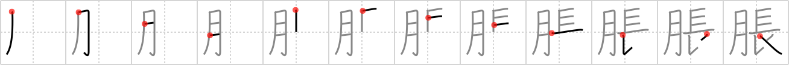

脹
← →
dilate

Reading:
On-Yomi: チョウ — Kun-Yomi: は.れる、ふく.らむ、ふく.れる
Heisig story:
Flesh . . . long.
Koohii stories:
1) [johnzep] 14-8-2007(246): Taking Viagra let's your blood vessels dilate…resulting in a body part getting long.
2) [Raichu] 22-10-2007(70): Staying out in the dark moonlit sky for a long time, your pupils dilate.
3) [fergal] 31-10-2009(35): Your girldfriend's pupils dilate. She's never seen a piece of flesh that long!
4) [eightyd] 15-5-2011(21): My dick is dilated.
5) [bihzad] 8-5-2008(16): When the moon comes up, your pupils dilate–they become longer on all sides–because the moon produces less light than the sun.